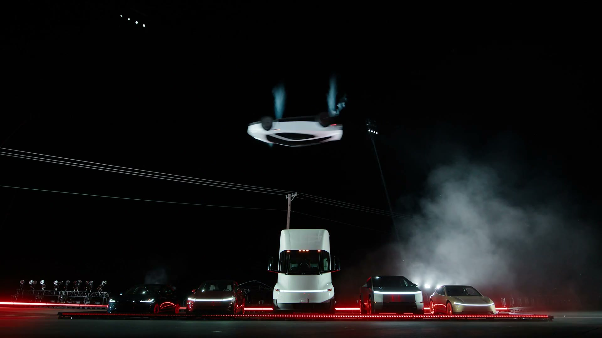

策略是怎样变好的
每个点是一项真实候选策略的平均得分；亮线为截至该代最好的得分。高分不保证所有测试都成功。
历史实验与原始记录。前往统一飞行实验 ↗
05 / FLIGHT CONTROL EXPERIMENT
同一个物理世界，比较训练前、中途和最后的控制策略。轨迹来自实际积分；参数是公开写明的假设。
24 米是场地等价任务，不能当作官方跳距。此处训练反馈控制器的参数，不是神经网络，也不是 Tesla 实车控制系统。
每个点是一项真实候选策略的平均得分；亮线为截至该代最好的得分。高分不保证所有测试都成功。
留出样本没有参加选优。统计对应页面所列的质量、推力、距离和初始姿态范围，不可外推为实车可靠性。
FINITE TESTS / 有限测试
四种旋转轴 × 两个质量端点 × 两档推力。
每格是有限样本成功率，不是可行性证明。
角度指相对水平姿态的旋转幅度。高度是质心离地高度。初始车身已经穿地的情况单独计为无效。
有限推力、角加速度和阀门响应都需要时间。车身尚未转正就触地，再好的控制器也无法补回已失去的高度。
罐压衰减采用假设规律。这个模型没有真实喷口标定、软轮胎、阵风和传感误差。绿色格子只表示这些假设下的离散测试成功。
METRES, NOT PIXELS / 尺度依据
视频约束比例；模型明确补上未知数。
每个数都可以查到来源或假设。

TWO FORCES / 同一个风机
裙边靠近表面时，抽气降低车底压力，外部压力把车压向表面。离开表面后，这个密封吸力迅速消失；风机仍可能通过排气产生反作用力。
模型把压差做功与排气动能放在同一功率预算内。风机方向固定在车身，倒过来时反力方向也跟着倒转。
两份美国专利与简明物理 ↗